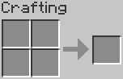
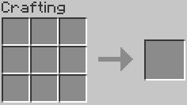
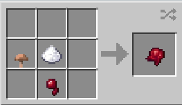
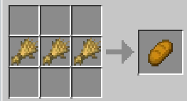
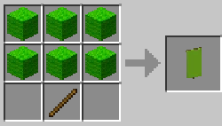
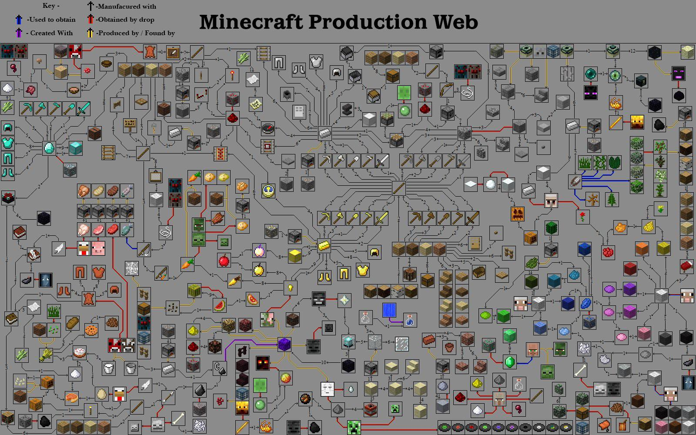

To create items in Minecraft, you need to craft them inside a crafting table. To craft, there
is a two by two grid inside the players inventory, this can be utilised to make the simplest of items, such as,
the crafting table. Inside the crafting table however, the grid is increased to a size of three by three gaining
the ability to craft more items.


Shapeless Recipes
Some recipes in Minecraft don't require the ingredients to be arranged in a specific way
inside the crafting table. These are called shapeless recipes. For example, players can craft a fermented spider
eye without needing a specific arrangement of the ingredients.

Shaped Recipes
On the other hand, some recipes require the ingredients to be placed in a specific order,
known as shaped recipes. These recipes can be moved around in any direction—up, down, left, right, sideways, or
even flipped. Examples of shaped recipes include crafting bread or an axe.

Fixed Recipes
Some recipes cannot be moved or mirrored in any way. These are known as fixed recipes. An
example of a fixed recipe is the use of dyes in banner recipes.

Due to Minecraft's massive popularity, the game includes a vast number of items, each with
its own crafting recipe. Many players find it difficult to remember all the recipes, so the game provides a
system to help. When you interact with a crafting table, there's a book icon you can tap to access all the
recipes in the game.
